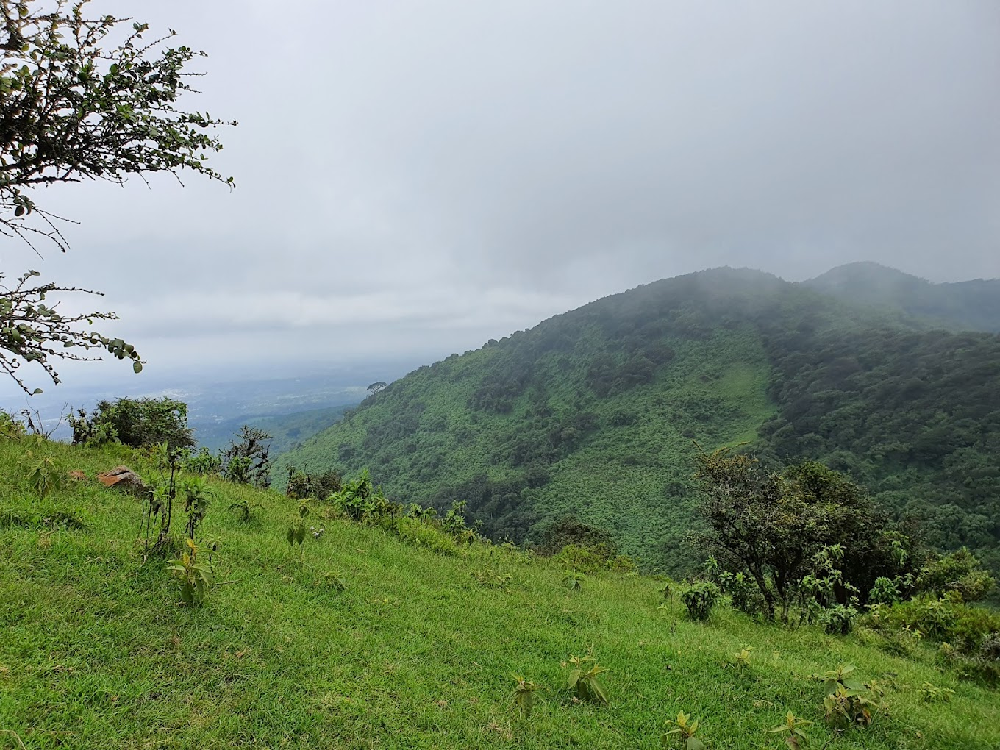
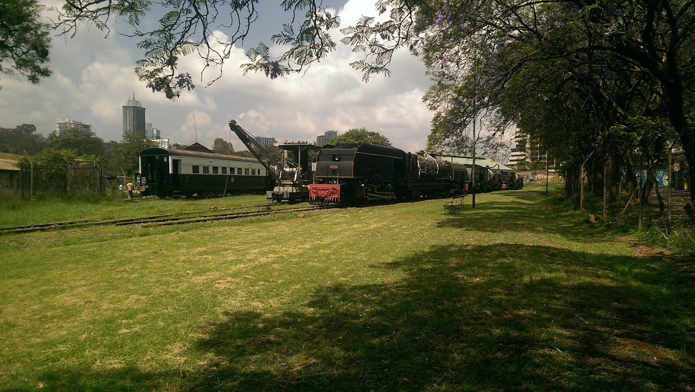
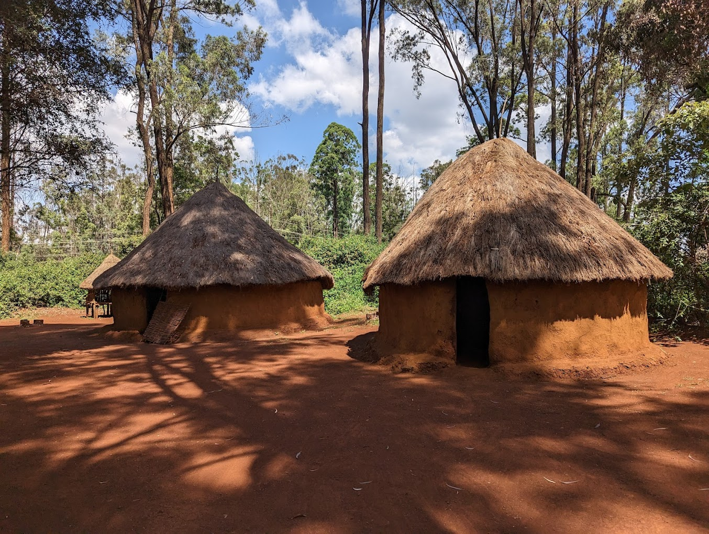
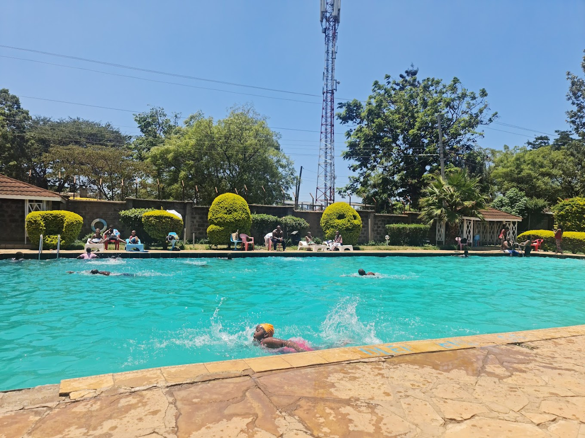
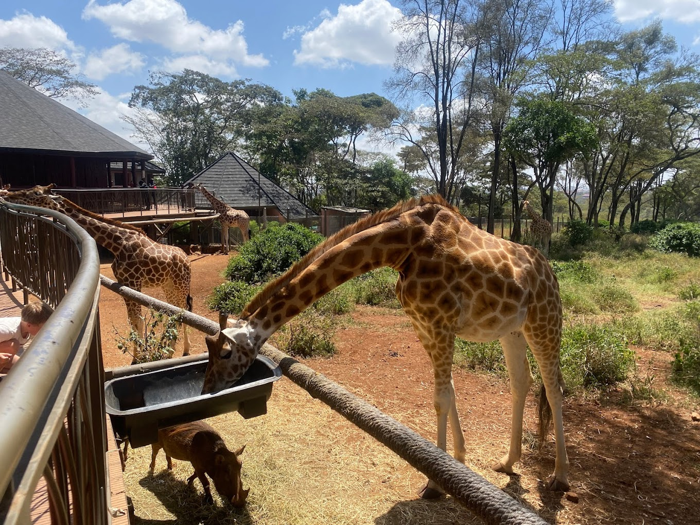
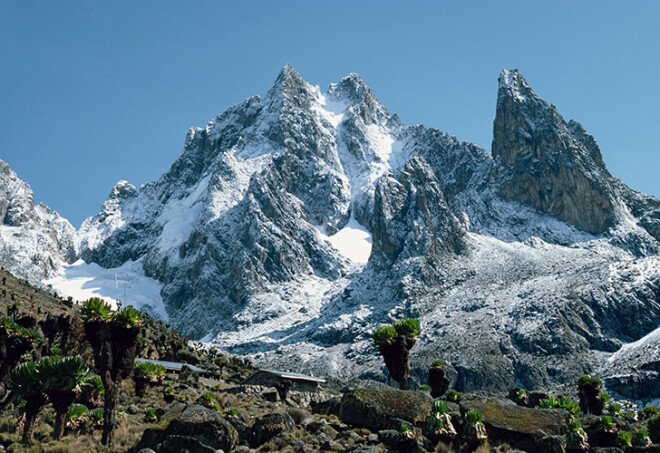
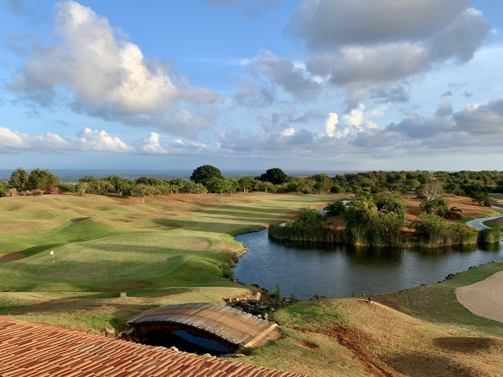

Karura Forest
Entry from ksh.100
Activities: Picknicking, Bike riding

Nairobi National Park
Entry from ksh.500
Activities: Animal Watching and Safaris

Oloolua Nature Trail
Entry from ksh.500
Activities: Nature walks, picnics, site-seeing

Tsavo National Park
Entry from ksh.500
Activities: Animal Watching and Safaris

Nairobi National Museum
Entry from ksh.200
Activities: History learning,

Nyali Beach
Entry:free
Activities: Sunbathing, swimming and picnicking.

Nairobi National Archives
Entry:free
Activities:History and Culture,

Sheldrick Wildlife Trust
Entry:free
Activities:Feeding Elephants, Seeing various wildlife
Ngong Hills
Ngong Hills
Entry:ksh.400
Activities:Hiking
Railway Golf Club
Railway Golf Club
Entry:ksh.1000
Activities:Golfing
Bomas Of Kenya
Bomas Of Kenya
Entry:ksh.400
Activities:Culture and History learning, Traditional dance and music
Barclays Swimming Pool
Barclays Swimming Pool
Entry:ksh.300
Activities:Swimming
Giraffe Center
Giraffe Center
Entry:ksh.600
Activities:Animal Watching and Feeding
Mount Kenya
Mount Kenya
Entry:ksh.1000
Activities:Mountain Climbing
Vipingo Golfing Ridge